Bài làm thử nghiệm cách viết prompt cho ba nhóm nhiệm vụ học tập phổ biến: tóm tắt tài liệu, giải thích khái niệm phức tạp và tạo câu hỏi ôn tập. Mỗi nhiệm vụ đều có ba cấp độ prompt: cơ bản, cải tiến và nâng cao.
Prompt cơ bảnPrompt cải tiếnPrompt nâng cao
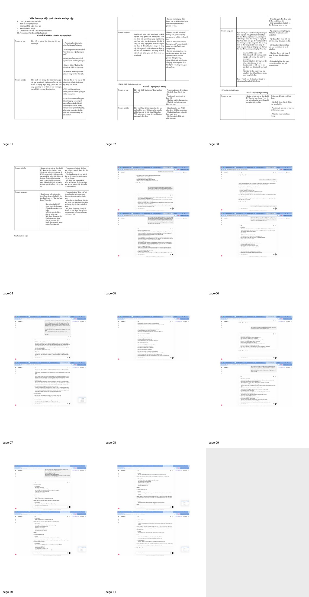
Khái quát bài làm
Ý tưởng và định hướng trình bày
Mục tiêu của bài là hiểu rõ vì sao một prompt cụ thể, có bối cảnh và có cấu trúc thường cho kết quả tốt hơn.
Trong phiên bản website, nội dung được viết lại bằng lời văn mạch lạc hơn để tránh lỗi font và giảm cảm giác sao chép nguyên văn từ tài liệu gốc. Mỗi phần đều giữ đúng tinh thần bài làm ban đầu, đồng thời sắp xếp theo nguyên tắc: phần chữ đi trước, ảnh minh chứng đi sau.
Phần 1
Tác vụ 1: Tóm tắt và phân tích chủ đề học ngoại ngữ
Ở nhiệm vụ đầu tiên, mình chọn chủ đề khó khăn khi học ngoại ngữ. Từ cùng một đề tài, mình viết ba dạng prompt: một phiên bản rất ngắn, một phiên bản nêu rõ các ý chính cần triển khai và một phiên bản nâng cao có vai trò người trả lời, yêu cầu phân tích nguyên nhân, ví dụ và giải pháp.
Khi so sánh, mình thấy prompt càng rõ mục tiêu và cấu trúc thì câu trả lời càng logic, ngắn gọn và có chiều sâu hơn. Prompt nâng cao đặc biệt hữu ích khi cần tạo nội dung có tính hướng dẫn hoặc phân tích.
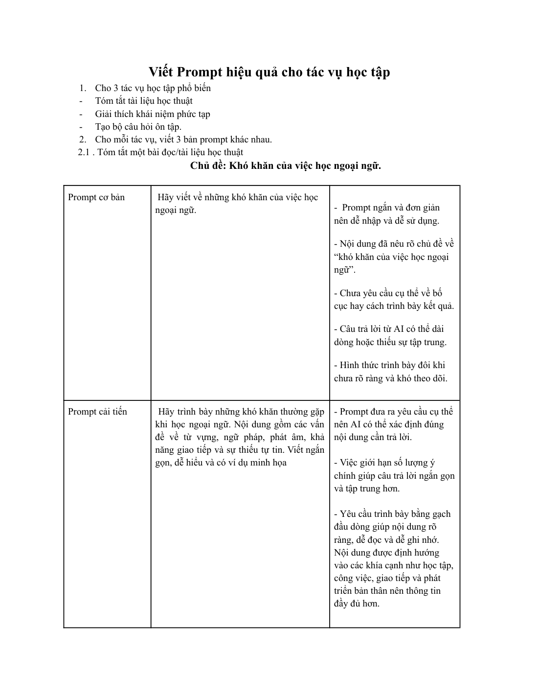
Minh chứng 1 – tư liệu gốc được đặt ngay sau phần nội dung liên quan.
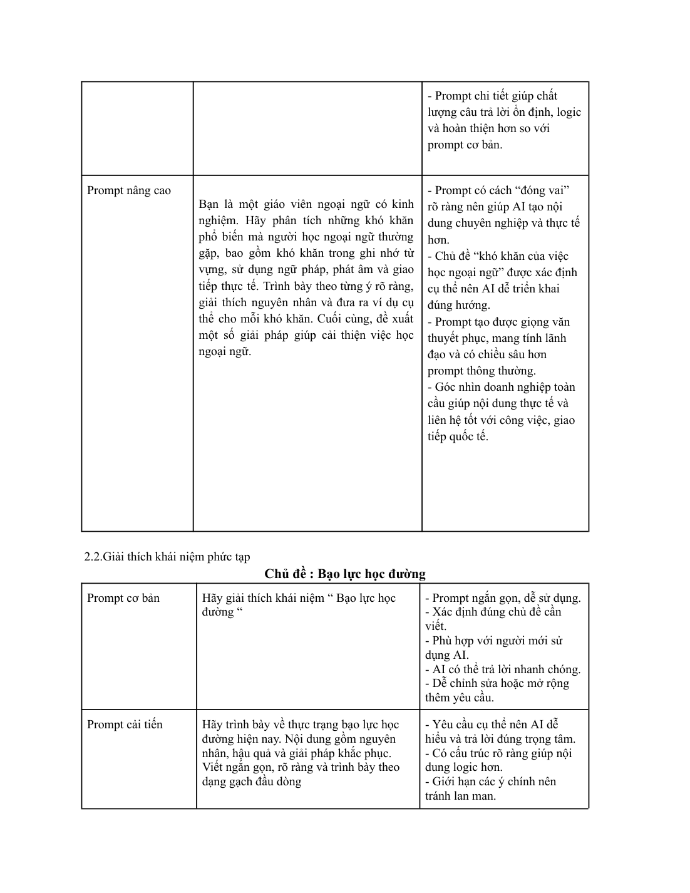
Minh chứng 2 – tư liệu gốc được đặt ngay sau phần nội dung liên quan.
Phần 2
Tác vụ 2: Giải thích khái niệm phức tạp
Ở phần này, mình chọn chủ đề bạo lực học đường. Prompt cơ bản chỉ yêu cầu định nghĩa, trong khi prompt cải tiến mở rộng sang nguyên nhân, hậu quả và giải pháp. Với prompt nâng cao, mình thêm bối cảnh người trả lời là giáo viên tâm lý học đường và yêu cầu dẫn ví dụ thực tế.
Sự khác biệt rõ nhất là mức độ ứng dụng. Prompt cơ bản cho câu trả lời nhanh, nhưng prompt nâng cao cho nội dung giàu ngữ cảnh hơn và phù hợp để dùng trong học tập hoặc thuyết trình.
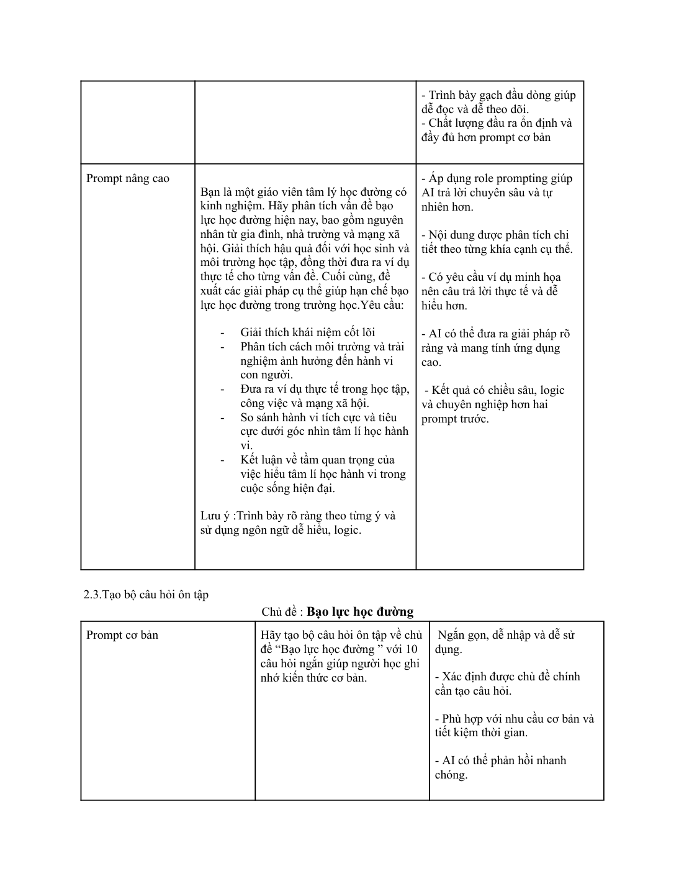
Minh chứng 1 – tư liệu gốc được đặt ngay sau phần nội dung liên quan.
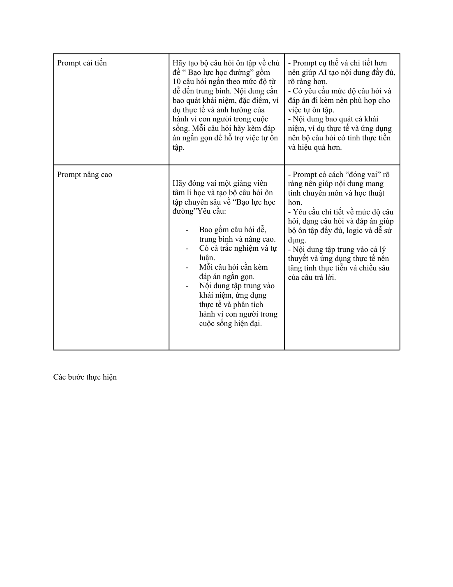
Minh chứng 2 – tư liệu gốc được đặt ngay sau phần nội dung liên quan.
Phần 3
Tác vụ 3: Tạo bộ câu hỏi ôn tập và rút nguyên tắc chung
Nhiệm vụ thứ ba là tạo bộ câu hỏi ôn tập cũng xoay quanh chủ đề bạo lực học đường. Mình tiếp tục áp dụng ba cấp độ prompt để quan sát cách AI thay đổi số lượng câu hỏi, độ rõ ràng của câu lệnh và chất lượng đầu ra.
Sau thử nghiệm, mình rút ra một số nguyên tắc: nêu rõ mục đích, giới hạn phạm vi, chỉ định dạng đầu ra, cung cấp vai trò cho AI khi cần và bổ sung ví dụ hoặc tiêu chí đánh giá nếu muốn kết quả ổn định hơn.
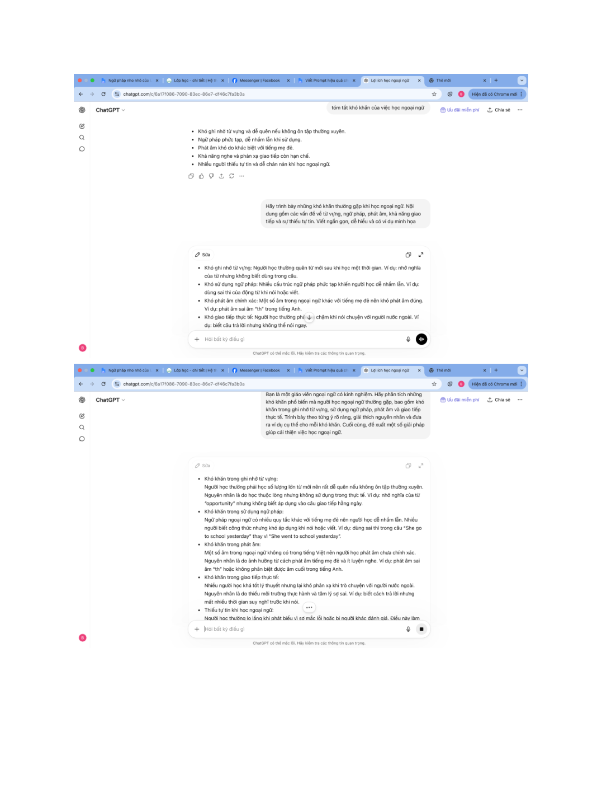
Minh chứng 1 – tư liệu gốc được đặt ngay sau phần nội dung liên quan.
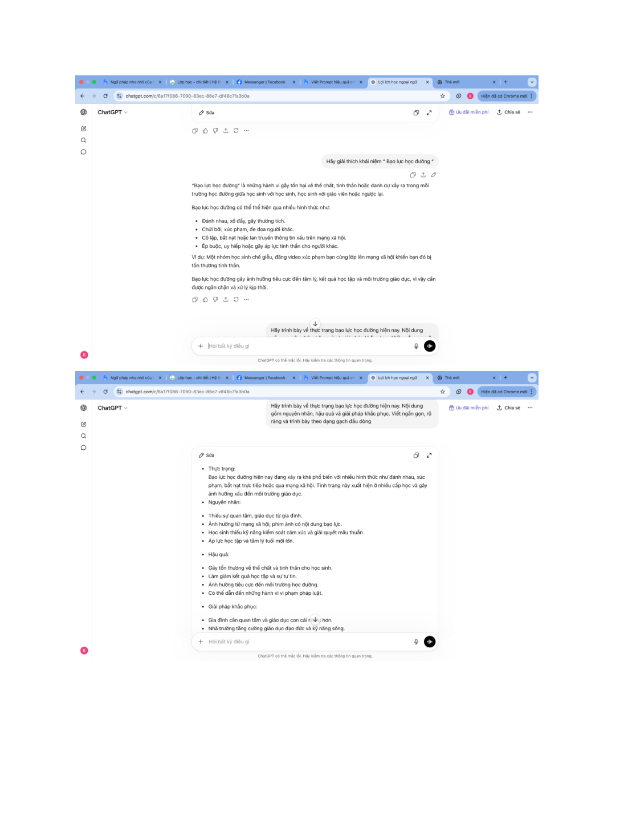
Minh chứng 2 – tư liệu gốc được đặt ngay sau phần nội dung liên quan.
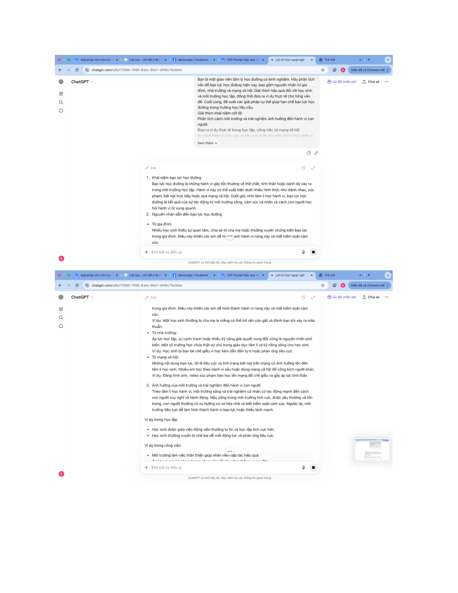
Minh chứng 3 – tư liệu gốc được đặt ngay sau phần nội dung liên quan.
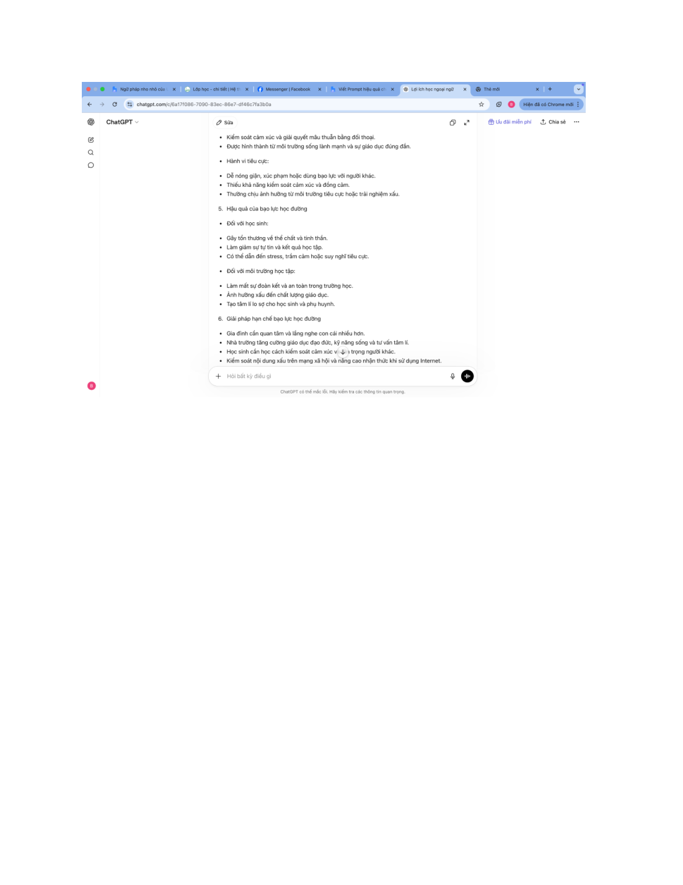
Minh chứng 4 – tư liệu gốc được đặt ngay sau phần nội dung liên quan.
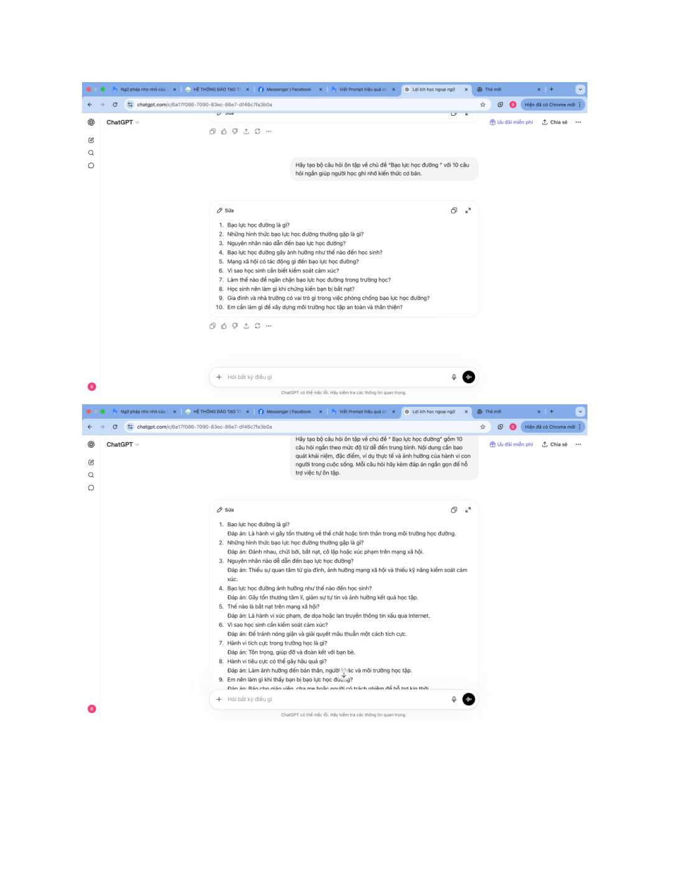
Minh chứng 5 – tư liệu gốc được đặt ngay sau phần nội dung liên quan.
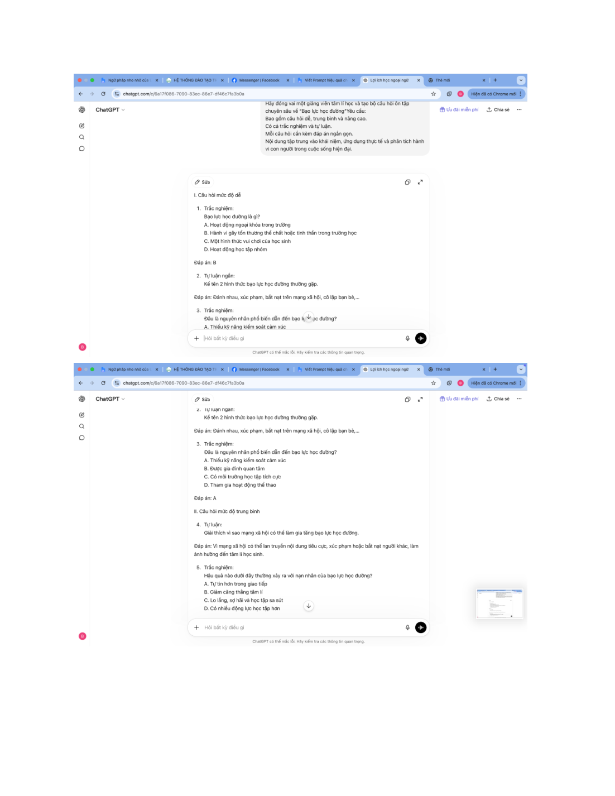
Minh chứng 6 – tư liệu gốc được đặt ngay sau phần nội dung liên quan.
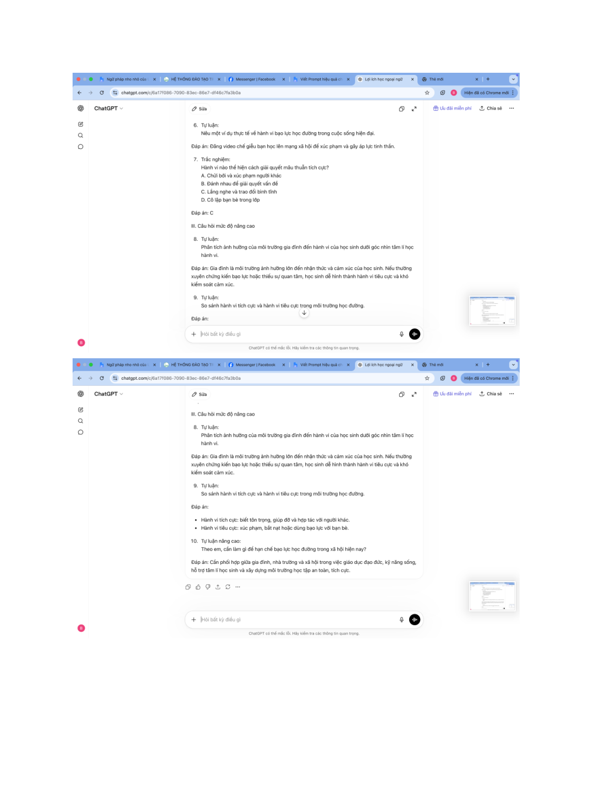
Minh chứng 7 – tư liệu gốc được đặt ngay sau phần nội dung liên quan.
Bảng tổng hợp
So sánh ba cấp độ prompt
Cấp độ
Đặc điểm
Hiệu quả điển hình
Cơ bản
Ngắn gọn, ít ràng buộc, dễ nhập
Trả lời nhanh nhưng dễ thiếu trọng tâm hoặc trình bày chưa rõ
Cải tiến
Nêu rõ nội dung, phạm vi, hình thức trình bày
Đầu ra rõ hơn, có cấu trúc và bám đề tốt hơn
Nâng cao
Có vai trò, bối cảnh, yêu cầu phân tích và ví dụ
Nội dung sâu hơn, giọng văn phù hợp hơn và có tính ứng dụng cao
Kết quả & cảm nhận
Điều mình rút ra sau bài tập
Bài tập giúp mình hiểu rằng prompt không chỉ là một câu hỏi, mà là cách định hướng suy nghĩ của AI. Viết prompt tốt sẽ giúp tiết kiệm thời gian chỉnh sửa và nâng chất lượng đầu ra rõ rệt.